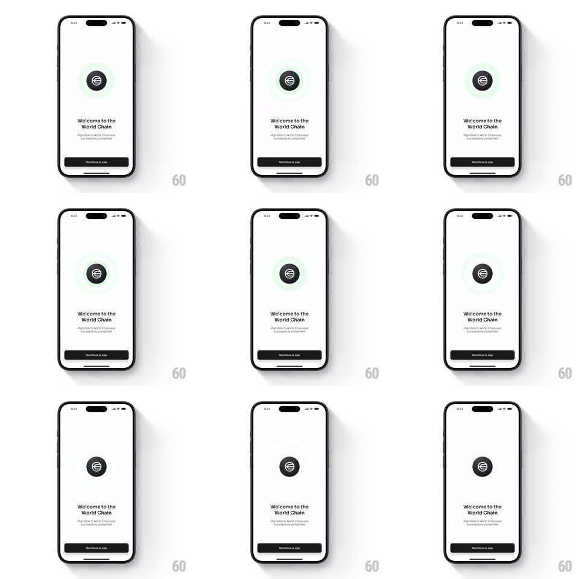

Media
Frame-by-frame

Rebuild this interaction 1:1: World App's intro pulse - the circular World logo sits center on white while soft green rings radiate outward from behind it, expanding and fading in a gentle loop.

Rebuild this interaction 1:1: World App's intro pulse - the circular World logo sits center on white while soft green rings radiate outward from behind it, expanding and fading in a gentle loop. ## Integration Integration: stack-agnostic spec - springs given as stiffness/damping, timed motions as duration + curve; map every value to your framework and animation library of choice. ## Scene A white success screen: the dark circular World logo (white globe glyph) center-upper area, "Welcome to the World Chain" headline, "Migration to World Chain was successfully completed!" subtitle, and a black "Continue to app" button pinned at the bottom. ## Motion spec Pattern: radiating pulse rings. - The logo scales in once (0.6 -> 1, spring ~360/18, 400ms) and stays. - From behind the logo, concentric mint-green rings spawn at its edge: each ring expands outward (radius grows ~2.5x) while fading (opacity 0.5 -> 0), ~1.8s per ring, a new ring spawning every 600ms so two or three are always in flight. - The headline and subtitle fade/translate up in sequence (150ms apart, 350ms) as the first rings expand. - The button slides up (spring ~340/22) and presses with a scale 0.97 bounce. - The pulse loop continues gently behind everything until the user continues. ## Calibration - Rings are soft (blurred edges or low alpha) - a glow, not a target. - The spawn cadence keeps motion constant without feeling urgent. ## Reduced motion One static green halo behind the logo; no ring loop. ## Don't miss - Rings emanate from BEHIND the logo disc - the logo stays crisp on top. - The green is the brand mint, never saturated neon.